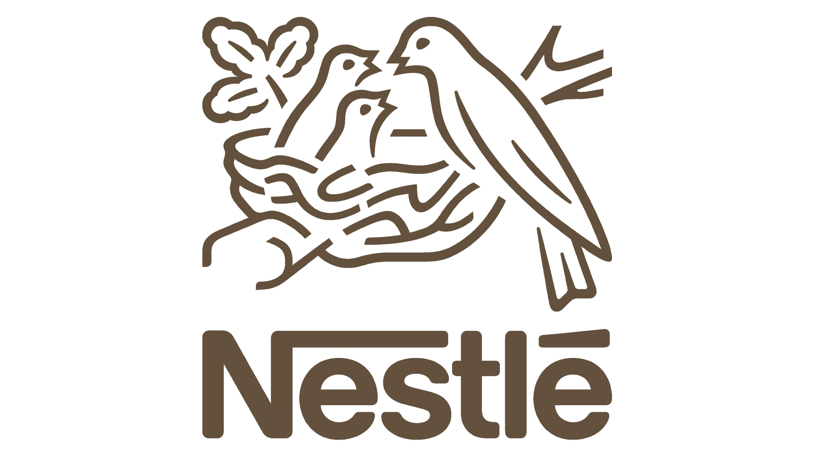

Hi! I'm Anuprita Kaple
I solve complex business and operational problems by turning ambiguity into structured, scalable solutions.
From designing a product portfolio for Nestlé Frozen Foods to delivering EV prototypes in Saudi Arabia to transforming capacity planning across 63 global plants, I’ve worked at the intersection of people, product, and technology. I combine analytical thinking, technology, and cross-functional leadership to turn ideas into solutions that work in the real world.
- $6M+Projected savings through digital transformation
- 1,800 Assets · 63 PlantsDigital transformation globally
- 63 EVs · 80 DaysZero-delay prototype delivery in Saudi Arabia
- 3+ YearsWork experience
- Cornell MEMMaster's in Engineering Management
- EMC² FellowCañizares Center for Emerging Markets, Cornell SC Johnson Business School
Experience
Experience across strategy, operations, digital transformation, and engineering in global organizations.

Nestlé USA · SC Johnson Immersion
Graduate Consultant
Ithaca, NY

FORVIA · CEER EV Program
Senior Program Development Engineer
Riyadh, Saudi Arabia
FORVIA · Digital Transformation
Senior Industrial Development Engineer
Pune, India
FORVIA · Stellantis & Renault
Design & Development Engineer
Pune, India

Larsen & Toubro · Heavy Engineering
Project Planning & Execution Intern
Surat, India
AI & Digital Builds
Hands-on builds across LLM tooling, agentic pipelines, and edge AI.
Menu Intelligence
AI-powered competitive intelligence
An LLM + RAG pipeline that analyzes restaurant menus to identify competitive gaps and opportunities.
35 dishes · 3 chains · 2 AI approaches
Python · Claude API · RAG
→
Career Ops AI
Autonomous job intelligence
An AI agent that monitors 100+ companies, detects ATS changes, filters opportunities, and delivers curated job alerts automatically.
100+ companies · 6 ATS platforms · 2× daily
Python · AI Agents · ATS APIs
→
MCP Weather
Real-time AI tool integration
A custom MCP server that gives an LLM access to live weather data through external APIs.
2 MCP servers · 6 tools · live data
Python · MCP · APIs · Claude
→
RPS-ESP32-CNN
Edge AI from hardware to inference
A computer-vision system built end-to-end—from custom image collection and CNN training to live embedded inference.
Custom dataset · CNN · ESP32 · live inference
ESP32 · TensorFlow · CNN · MicroPython
→
Selected Projects
Showcase of my work in product development, strategic operations, and data-driven project leadership.

Market Basket Analysis
Data & Product
Applied K-Means, ECLAT, and FP-Growth to a large retail transaction dataset to uncover customer segments and cross-sell opportunities.
387,985 transactions · 968 itemsets · lift up to 56.6
R · Python · K-Means · FP-Growth
→

Big Red Bites
Operations & Systems
Led a 14-member cross-functional team through strategic planning and a 7-month execution roadmap for a campus food-waste platform.
14-member team · $106K budget · 3rd place finish
Notion · GANTT Planning · UX Prototyping
→

Plant-Based Snack Strategy
Data & Product
Built a data-led market entry strategy for a plant-based protein bar using price clustering, EMV decision trees, and MAUT analysis.
$42.5M EMV · 99.94% robustness · 8-state analysis
K-Means · Decision Trees · MAUT
→

Robotic Arm, CRDF
Operations & Systems
Designed and simulated a 6-DOF robotic arm end-to-end, coordinating hands-on technical build with weekly team delivery milestones.
6 DOF · ROS simulation · weekly milestones
ROS · Robotics · Simulation
→

DriveBuddyAI
Data & Product
Architected a real-time video capture, storage, and playback pipeline for fleet safety monitoring at an AI-powered telematics startup.
End-to-end pipeline · real-time video · fleet-scale
C++ · OpenCV · ROS
→
Writing & Perspectives
Essays on technology, strategy, and leadership.
Leadership & Community
Building organizations, communities, and impact outside the day job.
President, Cornell Graduate Product Management Club
Ithaca, NY
Fellow, The Canizares Center for Emerging Markets
Ithaca, NY
Event Lead, Prayatnam — VIT Social Welfare & Development Club
Vellore, India
Education
Academic foundation across engineering, management, and applied analytics.
Ithaca, NY
Cornell University
M.Eng. in Engineering Management
Pune, India
Vishwakarma Institute of Technology
B.Tech, Mechanical Engineering
Featured
Selected posts and articles. Click through to read the full post on LinkedIn.
About Me

I believe in showing up — for a cause, for a team, or for a game. Outside of work, you’ll find me on the volleyball court, practicing harmonium, or writing my way through a new idea. I’m a huge advocate for education and a strong believer in the power of teamwork.
Contact
Currently in NY. Always glad to connect to talk roles, collaborations, or ideas worth building together.